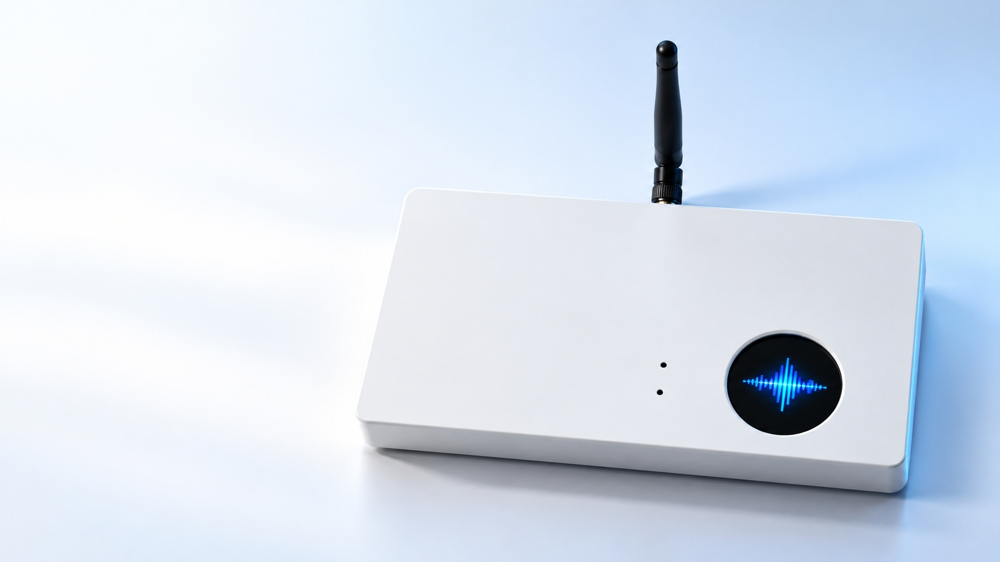

端云协同 AI 智能产品，赋能办公自动化
一言即达 AI 办公 · 对话开启高效协作

30秒体验全录智伴的核心功能
完整记录会议内容，转录成文字并智能总结要点。一键生成飞书文档，告别手动整理。
拍照识别关键信息，智能解析图片内容。快速生成总结，输出飞书文档。
自然语言对话，快速获取办公信息；支持飞书群聊对话与今日群聊消息智能总结，一键输出飞书文档。
智能提炼会议要点与群聊消息，快速生成文档，大幅提升整理效率
一键录音，拍照即对话，处理快，省时省力
一键输出飞书文档，信息流转更顺畅
深度适配办公流程，解决真实办公痛点